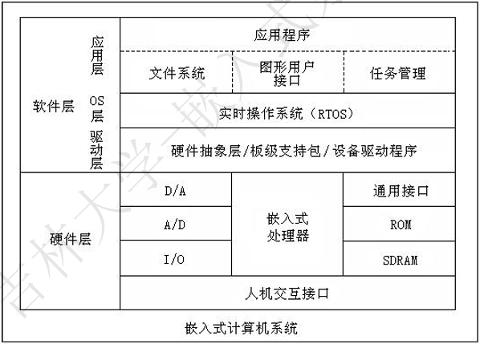
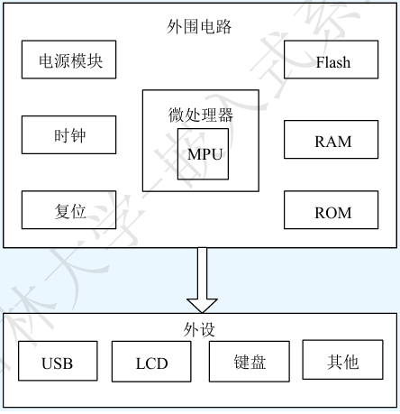
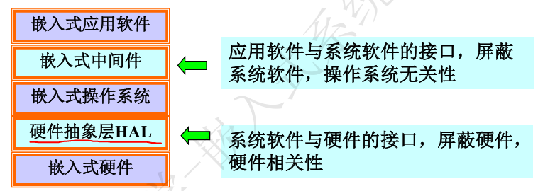
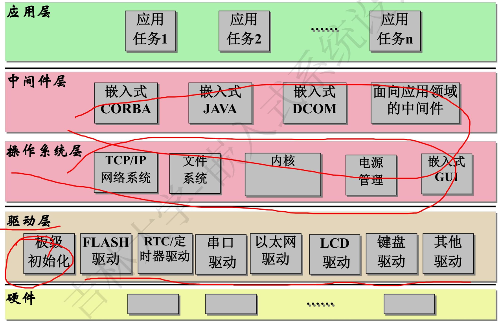
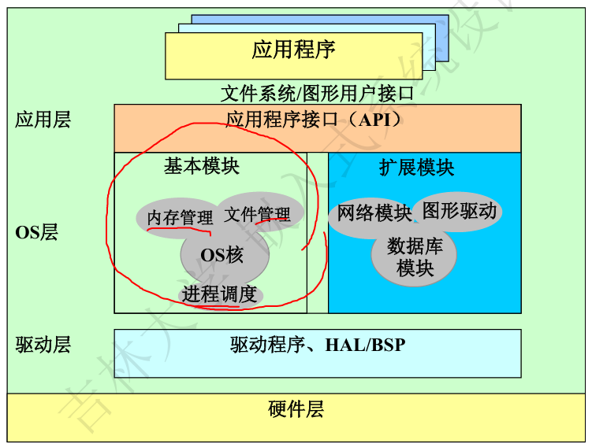
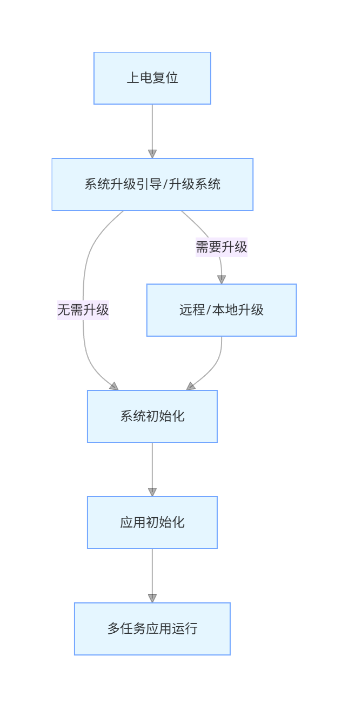
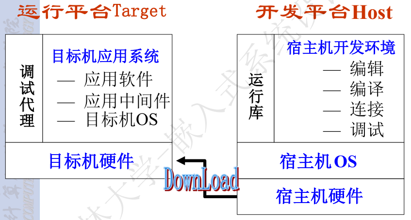

嵌入式系统
定义
嵌入式系统目前没有完全统一的权威定义，但有几个核心描述大家必须记住：
- 以应用为中心、以计算机技术为基础、软硬件可裁剪、适应应用系统对功能、可靠性、成本、体积、功耗严格要求的专用计算机系统；
- 嵌入性本质是将一个计算机嵌入到一个对象体系中去，这是理解嵌入式系统的基本出发点。关键在于嵌入设备内部、信号控制、体积小、结构紧凑；
- 嵌入式系统是计算机技术，通信技术，半导体技术，微电子技术，语音图象数据传输技术，甚至传感器等先进技术和具体应用对象相结合后的更新换代产品，是技术密集，投资强度大，高度分散，不断创新的知识密集型系统。反映当代最新技术的先进水平。
- 嵌入式行业 “分散无垄断”，通用计算机行业 “高度垄断”；
- IEEE 定义：用于控制、监视或者辅助操作机器和设备的装置；
- 通俗理解：“看不见的计算机”，它嵌入在其他设备内部，不直接面向用户，而是为特定功能服务。
[!tip]
- 嵌入式系统是面向用户、面向产品、面向应用的
- 嵌入式系统是一个技术密集､资金密集､高度分散､不断创新的知识集成系统｡
- 嵌入式系统必须根据应用需求对软硬件进行裁剪
嵌入式系统的特点
嵌入式系统的特点根源在于 “嵌入性、专用性、计算机系统” 三大基本要素，所有特征都是这三要素的衍生，且与通用计算机形成明确差异。
| 基本要素 | 核心含义 | 衍生特点 | 典型设备实例体现 |
|---|---|---|---|
| 嵌入性 | 物理上成为对象系统的一部分，不独立存在 | 小型（适配宿主设备体积）、可靠（适应宿主工作环境）、低功耗（减少宿主能耗负担）、价廉（控制整体设备成本） | 智能手表：小巧便携（小型）、续航 7-14 天（低功耗）、百元级价格（价廉）；工业 PLC：适应工厂高温 / 潮湿环境（可靠） |
| 专用性 | 功能为特定场景定制，无多余通用功能 | 软硬件可裁剪（按需保留核心功能）、最小配置（无冗余资源）、实时性（满足特定场景响应要求）、定制 OS（适配功能的精简操作系统） | 无人机飞控：仅保留 “姿态控制、电机驱动” 核心功能（最小配置），用实时 OS 确保飞行稳定性（实时性）；智能灯泡：裁剪掉图形处理模块（软硬件裁剪），用极简 OS 控制开关 / 亮度 |
| 计算机系统 | 本质是具备控制能力的计算机内核 | 配备专用外设接口（与宿主设备的传感器、执行器适配） | 智能手表：通过 I2C/SPI 接口驱动心率传感器（专用接口）；工业 PLC：通过隔离 I/O 接口连接工厂设备（专用接口）；无人机：通过 PWM 接口控制电机、UART 接口通信（专用接口） |
- 与通用计算机系统相比，还有其他显著特点
- 系统内核小
- 专用性强
- 运行环境差异大
- 可靠性要求高
- 系统精简和高实时性操作系统
- 具有固化在非易失性存储器中的代码
- 嵌入式系统开发工作和环境特殊
[!note]
嵌入式系统的 7 大显著特点，本质是 “嵌入性、专用性、计算机系统” 三要素的具体体现 —— 内核小、系统精简是专用性的要求，运行环境差异大、可靠性高是嵌入性的要求，固化代码、专用接口是计算机系统的要求，而特殊的开发环境是由前 6 大特点共同决定的。
通用计算机与嵌入式系统
通用计算机与嵌入式系统：现代计算机技术的两大分支；本质是 “满足不同核心需求” 而产生的分化 —— 一个追求 “极致算力”，一个追求 “精准控制”，两者并行发展、互不替代：
通用计算机：提供通用、强大的计算能力
嵌入式系统：实现特定对象的智能化控制
| 对比维度 | 通用计算机 | 嵌入式系统 |
|---|---|---|
| 形式和类型 | 物理形态可见，为独立设备；按体系结构、运算速度、结构规模分为大、中、小型机和微机 | 物理形态不可见，嵌入在其他设备内部；形式多样，按应用场景分类（如汽车电子、智能家居等） |
| 系统组成 | 通用处理器 + 标准总线 + 外设；软件与硬件相对独立，可灵活搭配扩展 | 面向应用的嵌入式微处理器（总线和外部接口多集成于芯片内部）；软件与硬件紧密集成，定制化绑定 |
| 开发方式 | 开发平台与运行平台一致，直接在自身设备上编写、运行、调试程序 | 采用交叉开发模式，开发平台为通用计算机，运行平台为嵌入式设备（需通过工具烧录程序） |
| 二次开发性 | 终端用户可自由重新编制应用程序，支持更换操作系统，二次开发门槛低 | 出厂后功能固定，终端用户一般不能再编程；仅专业开发者可通过专用工具升级或修改程序 |
嵌入式系统的发展
嵌入式技术的 4 个发展阶段，核心是 “硬件集成化提升 + 软件功能升级 + 应用场景拓展” 的逐步演进
第一阶段：单芯片(芯片+汇编程序) 第二阶段：嵌入式CPU(芯片+简单操作系统+C程序) 第三阶段：嵌入式操作系统(芯片+可裁减操作系统+混合编程) 第四阶段： Internet技术与嵌入式技术融合
第一阶段：单芯片时代（芯片 + 汇编程序）
以单芯片可编程控制器为核心（比如早期 8051 单片机的雏形），没有独立的操作系统，完全依赖汇编语言直接操作硬件。
- 一些专业性极强的工业控制系统，早期工业专用控制系统，比如工厂流水线的简单计数控制、机床的单一动作控制；
- 系统结构简单，只能完成单一控制任务（如 “检测温度→控制继电器开关”），存储容量小（KB 级），无用户交互接口；
第二阶段：嵌入式 CPU 时代（芯片 + 简单 OS+C 程序）
嵌入式 CPU 出现（如 Intel 8080、Motorola 6800），搭配简单操作系统，C 语言取代汇编成为主流开发语言。
- 主要用来控制系统负载以及监控应用程序运行。工业控制中的负载监控、早期家电的简单智能控制（如带定时功能的洗衣机）；
- CPU种类繁多，通用性比较弱；系统开销小，效率高；操作系统具有一定的兼容性和扩展性；但是应用软件较为专业，用户界面不够友好
第三阶段：嵌入式 OS 时代（ARM 处理器 + 可裁剪 OS + 混合编程）
以 ARM 技术为核心的嵌入式处理器成为主流，搭配可裁剪嵌入式操作系统，支持多语言混合编程。
分布控制、柔性制造、数字化通信和信息家电
操作系统内核精小，效率高，具备文件管理、多任务调度、网络支持、图形界面等功能，能满足复杂场景需求；
具有大量的应用程序接口（API），开发应用程序简单；嵌入式应用软件丰富
第四阶段：嵌入式 Internet 时代（32/64 位处理器 + IoT + 实时 OS）
32/64 位高性能嵌入式处理器，嵌入式技术与 Internet 深度融合，实时操作系统支持网络功能。
嵌入式系统的硬件和软件特征
嵌入式系统的整体组成和硬件模块构成，核心逻辑是 “面向特定应用定制”—— 硬件围绕 “嵌入式处理器” 搭建，所有模块都为适配具体功能服务。
嵌入式系统不是单一的硬件或软件，而是 “硬件 + 软件 + 开发工具 / 系统” 的完整体系，三者缺一不可：
- 核心组成：硬件（物理基础）+ 软件（功能实现）+ 开发工具 / 系统（开发支撑）；
- 关键前提：绝大多数嵌入式系统是 “定制化” 的 —— 比如智能手表的硬件的、软件是为 “可穿戴健康监测” 定制，工业 PLC 是为 “工厂设备控制” 定制，没有通用标准配置。

嵌入式系统的硬件
嵌入式硬件的 “核心架构”—— 以嵌入式处理器为中心，所有模块（存储设备，I/O设备，通信接口设备，扩展设备接口以及电源）都围绕它协同工作，且完全为特定应用定制（无冗余设计）

嵌入式处理器
嵌入式处理器是嵌入式硬件的核心控制单元，负责执行程序、处理数据、协调所有外设工作，所有硬件模块都围绕它协同运作。
嵌入式处理器分为 EMPU、EMCU、EDSP、ESoC 四类
- 嵌入式微处理器（EMPU：Embedded Microprocessor Unit）
- 嵌入式微控制器（EMCU：Embedded Microcontroller Unit）
- 嵌入式数字信号处理器（EDSP：Embedded Digital Signal Processor）
- 嵌入式片上系统（ESoC：Embedded System on Chip）
嵌入式微处理器（EMPU）
EMPU 是嵌入式系统的 “高性能核心”，本质是通用 CPU 的 “嵌入式定制版”，核心优势是强大的通用计算能力，专门适配复杂嵌入式场景。
- EMPU 的核心本质：通用 CPU 的 “裁剪 + 强化” 版
- EMPU 的核心特征：“CPU Core” 方案（需外部扩展）
- EMPU 芯片本身只包含 CPU 内核，必须搭配外部模块才能工作
- 必需外部扩展模块：RAM（运行时存数据）、ROM/Flash（存程序）、电源管理芯片（稳定供电）、总线控制器（连接外设）；
- 开发者需做工作：设计 “母板”（核心板或单板计算机），将 EMPU 与外部模块焊接在电路板上，完成硬件适配。
- 嵌入式微处理器及其存储器、总线、外设等安装在一块电路板上，称为单板计算机
EMPU 的架构选择由应用场景决定，核心是 “适配复杂操作系统和算法”，主流有三类：
| 架构类型 | 核心特点 | 代表产品 | 适用场景 |
|---|---|---|---|
| ARM 架构 | 低功耗、高性能、生态成熟，绝对主流 | Cortex-A53（中端设备）、A72（高端设备）、A78（旗舰设备） | 智能座舱、工业网关、高端物联网设备（运行 Linux/Android） |
| x86 架构 | 兼容 x86 生态，支持完整 Windows 系统 | Intel Atom 系列、AMD Embedded 系列 | 工控机、医疗设备、零售收银机（需运行 Windows 工业软件或 x86 专属程序） |
| RISC-V 架构 | 开源、免费、可自定义，新兴力量 | 嘉楠堪智 K230、昉・星光 V3S | 国产化设备、物联网网关、边缘计算设备（追求自主可控和成本优势） |
EMPU 的核心价值是 “提供强大通用计算能力”，当应用满足以下任一条件时，必选 EMPU：
- 需要运行 Linux、Android、Windows 等复杂操作系统（这些系统对内存、计算能力要求高，MCU 无法支撑）；
- 需要处理大量数据或复杂算法（如视频解码、AI 推理、大数据转发）；
- 需要连接多个外设并协同工作（如智能座舱连接屏幕、摄像头、雷达、车联网模块）。
嵌入式微控制器（EMCU）
EMCU（又称单片机），核心优势是 “All-in-One 单片集成”—— 把计算机系统所有核心部件打包进一颗芯片，兼顾低成本、小体积、低功耗，完美适配绝大多数简单到中等复杂度的嵌入式场景。
- EMCU 的核心本质：“一颗芯片 = 一台完整计算机”
- MCU (单片机) 是“All-in-One”的方案：将CPU、内存（RAM/Flash）、定时器、串口等所有外设都集成在了一颗芯片上。开发简单，系统紧凑。
EMCU 的核心特征是 “集成度高”，一颗典型的 MCU 芯片内部包含三大核心模块，无需外部扩展就能独立工作：
| 集成模块 | 核心作用 | 实例体现（STM32F103） |
|---|---|---|
| 内核（Core） | 执行程序指令、处理数据，是 EMCU 的 “大脑” | ARM Cortex-M3 内核，每秒可执行数百万条指令，处理传感器数据、控制外设动作 |
| 存储器（Memory） | 存储程序和数据，分为 “程序存储” 和 “数据存储” 两类 | - Flash（程序存储）：128KB，存操作系统和应用程序（如灯光控制逻辑）；- SRAM（数据存储）：20KB，存运行时的临时数据（如当前检测的温度值） |
| 外设（Peripherals） | 实现与外部设备的交互（输入 / 输出、通信），是 EMCU 的 “手脚和通信接口” | - 基础外设：GPIO（控制 LED 灯、继电器）、定时器（定时开关）、看门狗（防止程序卡死）；- 通信接口：UART（串口通信，如连接蓝牙模块）、I2C/SPI（连接传感器、显示屏）；- 功能外设：ADC（采集温度、电压等模拟信号）、PWM（控制电机转速、LED 亮度）；- 高端外设：部分 MCU 集成以太网（联网）、USB（数据传输）、CAN 总线（汽车电子专用） |
[!tip]
总结：EMPU 与 EMCU 的核心差异对照表（含记忆要点）
对比维度 嵌入式微控制器（EMCU） 嵌入式微处理器（EMPU） 记忆要点 核心结构 单片集成（CPU + 内存 + 外设） 仅 CPU 内核，需外部扩展 集成度：EMCU＞EMPU 别名 单片机 —— 记住 “单片机 = EMCU” 核心特点 简单、紧凑、低功耗、低成本 强大、灵活、可配置性高 特点：EMCU “省”，EMPU “强” 适用系统 裸机 / 轻量级 RTOS Linux/Android 等复杂 OS 系统复杂度：EMCU＜EMPU 开发方式 简单开发，程序直接烧录 交叉开发，需编译内核 / 根文件系统 开发难度：EMCU＜EMPU 应用核心需求 精准控制（如 “开关灯、读传感器”） 复杂智能（如 “导航、图像识别”） 需求匹配：控制选 EMCU，智能选 EMPU
嵌入式数字信号处理器（EDSP）
EDSP 是嵌入式领域专门为高速、实时数字信号处理设计的处理器，核心优势是把音频、视频、传感器数据等离散信号的复杂数学运算（如滤波、FFT 变换）做到极致高效，远超通用 CPU 和 MCU。
- EDSP 的所有设计都围绕 “处理离散时间信号” 展开
- EDSP 的高效不是靠 “主频堆料”，而是靠针对性的硬件设计：
- 哈佛结构：程序总线和数据总线分开，能同时读取指令和数据，解决了通用处理器 “指令和数据抢总线” 的瓶颈，
- 专用硬件单元：比如乘法累加器（MAC）可直接完成 “乘法 + 累加” 一体化操作，无需分步骤执行，速度远超通用处理器的软件模拟；
- SIMD（单指令多数据流）+ 零开销循环：SIMD 指令能让一条指令同时处理多个数据（如一次处理 4 组音频采样值）；零开销循环允许反复执行某段运算（如连续滤波）时，无需额外的指令跳转开销，进一步提升实时性。
不再生产独立的 EDSP 芯片，而是将 DSP 能力集成到通用处理器或 SoC 中，通过 “协同工作” 发挥优势
| 融合方式 | 核心逻辑 | 实例 |
|---|---|---|
| 协处理器模式 | 主 CPU（如 ARM Cortex-A）负责逻辑控制，DSP 作为协处理器，专门承接信号处理任务 | 部分工业 MCU 中，Cortex-M4 为主 CPU，集成专用 DSP 协处理器，处理传感器数据 |
| 指令集扩展模式 | 在通用 CPU 指令集中加入 DSP 专用指令（如 ARM 的 NEON 技术），让一个内核同时具备控制和信号处理能力 | 手机 SoC 的 ARM Cortex-A 系列内核，通过 NEON 指令集处理音频、视频编码 |
| 异构计算模式 | 在 SoC 中集成 CPU、GPU、DSP、NPU 等多个计算单元，各自负责擅长的任务，协同工作 | 手机 SoC 中的 Hexagon DSP（高通），专门处理音频降噪、传感器融合、AI 推理；自动驾驶 SoC 中，DSP 负责雷达信号处理 |
嵌入式片上系统（ESoC）
SoC（嵌入式片上系统）的核心是 “将计算机系统所有核心功能，甚至多个不同架构的计算单元，全部集成在一颗芯片上” ，不只是简单的硬件堆砌，而是基于 IP 核的 “系统级解决方案”，尤其以 “异构计算” 为当代核心特征，是高端嵌入式设备的核心硬件。
- 核心依赖 “IP 核复用” 技术，这是理解 SoC 设计的关键
- IP 核（知识产权核）是预先设计好、经过验证的 “标准功能模块”，相当于芯片世界的 “乐高积木” 或 “软件库”。
- 当代 SoC 最显著的特点是异构计算，将不同架构、不同指令集、为不同任务优化的计算单元（CPU、GPU、DSP、NPU、ISP 等）集成在一颗芯片上，各自负责擅长的任务，协同工作
嵌入式系统的软件
嵌入式系统的软件：由嵌入式操作系统和相应的各种应用程序构成；分为系统软件（操作系统，中间件）和应用软件
两个软件系统架构，核心差异是 “是否包含中间件”，对应不同复杂度场景：

| 架构类型 | 组成（从下到上） | 适用场景 | 核心优势 |
|---|---|---|---|
| 架构 1（无中间件） | 嵌入式硬件 → 嵌入式操作系统 → 嵌入式应用软件 | 简单场景（如智能灯、遥控器），功能单一、无跨 OS 需求 | 结构简单、资源占用少（适合内存小的 MCU） |
| 架构 2（含中间件） | 嵌入式硬件 → HAL → 嵌入式操作系统 → 中间件 → 嵌入式应用软件 | 复杂场景（如物联网网关、工业控制器），需跨 OS、多设备通信 | 兼容性强、可扩展性好（支持功能迭代和跨平台移植） |
嵌入式软件系统的体系结构
嵌入式软件系统的体系结构是 “从硬件到应用” 的五层分层架构，核心逻辑是逐层屏蔽差异、降低耦合
每层核心定位：
- 底层（驱动层 + 硬件）：解决 “硬件怎么用” 的问题；
- 中间层（操作系统层 + 中间件层）：解决 “资源怎么管、通用服务怎么提供” 的问题；
- 上层（应用层）：解决 “业务要做什么” 的问题。

硬件抽象层（HAL)
HAL 是夹在 “操作系统（OS）” 和 “硬件” 之间的中间层，屏蔽底层硬件的多样性，操作系统不再面对具体的 硬件环境，而是面对这个中间层所代表的，逻辑上的硬件环境
- 对操作系统：提供统一的标准化接口（比如 “读取传感器数据”“控制 GPIO 输出”），OS 无需知道硬件的具体型号、寄存器地址，只需调用这些通用接口；
- 对硬件：将 OS 的通用接口指令，翻译成硬件能识别的专属指令（比如不同厂商的传感器，读取数据的寄存器地址不同，HAL 会适配这些差异）。
HAL、驱动层和 BSP（板级支持包），核心差异如下：
| 组件 | 核心定位 | 通俗区别 |
|---|---|---|
| HAL（硬件抽象层） | 芯片级抽象，提供统一接口，屏蔽不同芯片的硬件差异（如 STM32 和 GD32 的 GPIO 差异） | “跨芯片的通用翻译” |
| 驱动层 | 硬件专属驱动，直接操作硬件寄存器（如某型号传感器的具体驱动代码） | “单个硬件的专属指令集” |
| BSP（板级支持包） | 板级抽象，适配特定开发板的硬件配置（如同一芯片不同开发板的 LED 引脚不同） | “跨开发板的适配工具” |
板级支持包（BSP）
BSP（Board Support Package，板级支持包）是硬件抽象层（HAL）的具体实现形式
- 本质：HAL 的一种实现（不是独立于 HAL 的组件），专门针对 “特定硬件板卡” 设计；
- 核心作用：解决 “嵌入式 OS 如何在具体硬件上运行” 的问题，是 OS 与硬件板卡之间的适配层；
BSP简单地说，就是一段启动代码，和计算机主板的BIOS差不多，但提供的功能相差很大。
- 硬件相关性：BSP 与具体硬件板卡强绑定，为特定板卡定制。
- 操作系统相关性：BSP 与特定嵌入式 OS 匹配，不同 OS 的 BSP 结构和接口不同。
BSP 需完成 “初始化” 和 “设备驱动” 两大工作，其中初始化分为三级流程，层层递进：
- 嵌入式系统的三级初始化（从硬件到 OS）
| 初始化级别 | 核心工作内容 | 实例（STM32F4 开发板 + BSP） |
|---|---|---|
| 片级初始化（最底层） | 针对 CPU 芯片本身的初始化（与板卡无关）：设置 CPU 核心寄存器、栈指针、时钟频率、中断控制器 | 初始化 ARM Cortex-M4 内核、设置系统时钟为 168MHz、配置 NVIC 中断控制器 |
| 板级初始化（中间层） | 针对具体板卡的硬件初始化：初始化板上外设（LCD、网卡、传感器）、配置 GPIO 引脚、初始化软件数据结构和参数 | 初始化开发板上的以太网 PHY 芯片、LCD 屏引脚、SD 卡接口、心率传感器 I2C 总线 |
| 系统级初始化（最高层） | 为嵌入式 OS 启动做准备：初始化内存（RAM）、设置 OS 启动参数、调用 OS 初始化函数 | 初始化 1MB SRAM、设置 FreeRTOS 的堆内存、调用vTaskStartScheduler()启动 OS 调度器 |
- BSP 包含板卡上核心外设的驱动程序，无需 OS 或应用软件单独开发，直接为上层提供硬件操作接口
嵌入式操作系统（EOS）
嵌入式操作系统包括：嵌入式内核、嵌入式TCP/IP网络系统、嵌入式文件系统、嵌入式GUI系统和电源管理等部分。
- 其中嵌入式内核是基础和必备的部分，其他部分要根据嵌入式系统的需要来确定
- 嵌入式操作系统大部分是 嵌入式实时操作系统（RTOS）
- RTOS（Real-Time Operating System，实时操作系统）是 “可靠性和可信度极高的实时内核”，核心是 “实时响应 + 资源合理分配”
- 嵌入式操作系统的主要特点：体积小、实时性、特殊的开发调试环境

[!tip]
从裸机到 RTOS，本质是 “从无序的单线程到有序的多任务”
使用嵌入式操作系统的本质是用 “操作系统的调度开销” 换取 “实时性、可维护性、资源利用率的大幅提升”：
嵌入式软件运行流程
基于多任务操作系统的嵌入式软件的主要运行流程分为五个阶段：上电复位，板级初始化，引导/升级系统（远程/本地升级），系统初始化，应用初始化，多任务应用

- 上电复位，板级初始化阶段：
- 嵌入式系统上电复位后完成板级初始化工作
- 板级初始化程序具有完全的硬件特性，一般采用汇编语言实现。
- CPU中堆栈指针寄存器的初始化。BSS段（Block Storage Space表示未被初始 化的数据）的初始化。CPU芯片级的初始化：中断控制器、内存等的初始化
- 系统引导/升级阶段
- 根据需要分别进入系统软件引导阶段或升级阶段
- 软件可通过测试通信端口数据或判断特定开关的方式分别进入不同阶段
- 系统引导阶段
- 将系统软件从NOR Flash中读取出来加载到RAM中运行
- 软件直接在 NOR Flash 上运行（无需加载到 RAM），进入系统初始化阶段
- 从外存（NAND Flash/CF 卡 / MMC）读取软件→加载到 RAM 中运行
- 系统升级阶段
- 进入系统升级阶段后系统可通过网络进行远程升级（TFTP、FTP、HTTP）或通过串口进行本地升级（Console口使用超级终端或特定的升级软件）。
- 系统初始化阶段
- 根据系统配置初始化数据空间、初始化系统所需的接口和外设
- 内核→网络 / 文件系统→中间件
- 应用初始化阶段
- 应用任务的创建，信号量、消息队列的创建和与应用相关的其它初始化工作
- 系统进入多任务状态；OS 调度器按既定算法（如优先级抢占调度），轮流让就绪态的任务执行
嵌入式系统的开发工具和开发系统
嵌入式开发的核心特点是 “开发与运行分离” —— 开发在强大的 PC（宿主机）上完成，最终软件运行在资源有限的嵌入式设备（目标机）上。
开发工具一般用于开发主机，包括语言编译器、连接定位器、调试器等
交叉开发环境：嵌入式软件开发的全套工具软件集合 + 宿主机 - 目标机的协作体系（含硬件连接 + 逻辑通信）；宿主机与目标机之间在物理连接的基础上建立起逻辑连接。
宿主机（Host） ： 用于开发的计算机（通常是 PC / 工作站），软硬件资源丰富，支撑开发全流程
目标机（Target） ：所开发的嵌入式系统（如 STM32 开发板、智能温控器），是软件的最终运行环境

嵌入式系统的分类
- 按嵌入式微处理器的位数分类：4位、8位、16位嵌入式系统已经获得了大量应用，32位嵌入式系统正成为主流发展趋势。而一些要求高可靠性、高速处理的嵌入式系统已经开始使用64位嵌入式微处理器。
- 按软件实时性需求分类：非实时系统；软实时系统；硬实时系统
- 按嵌入式系统的复杂程度分类：小型，中型，复杂